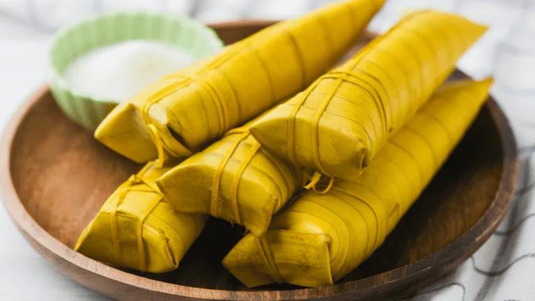
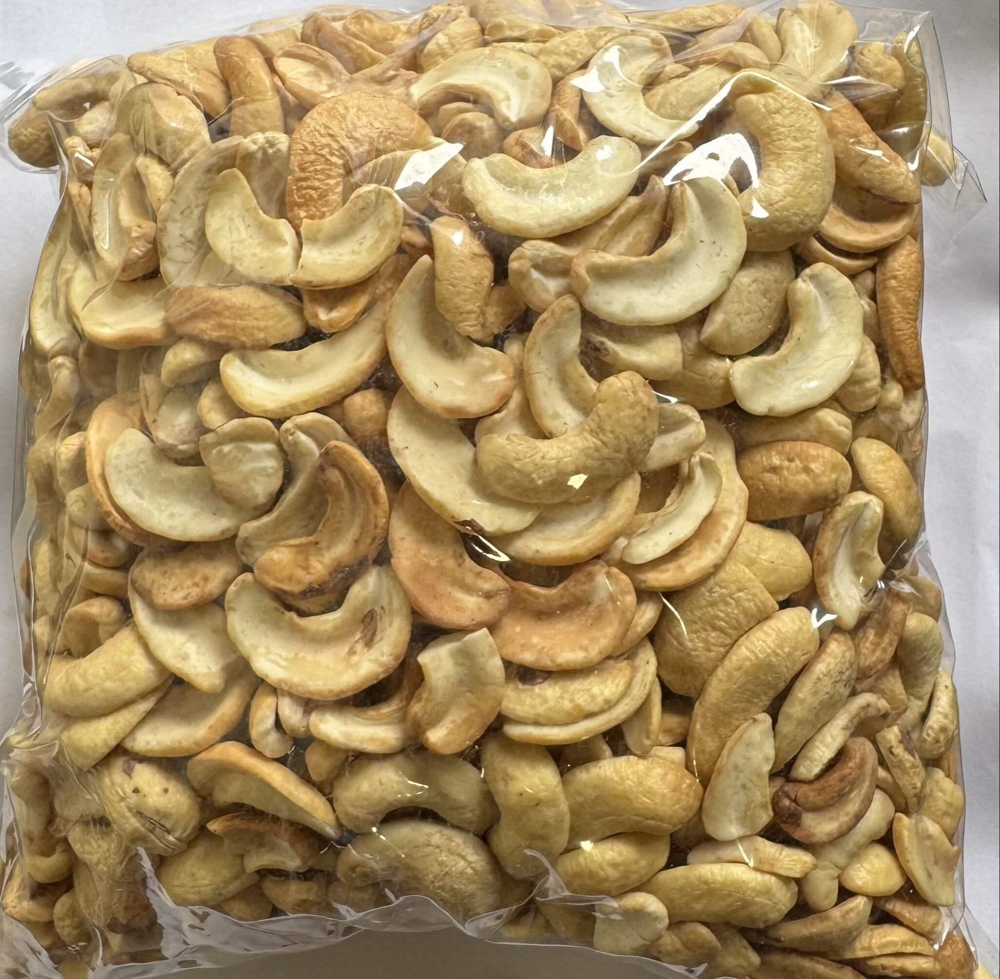
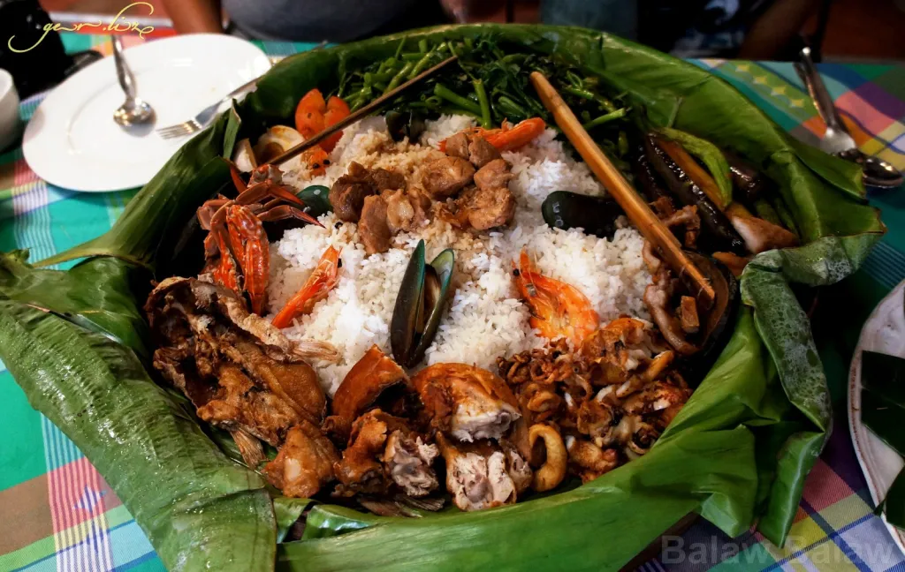
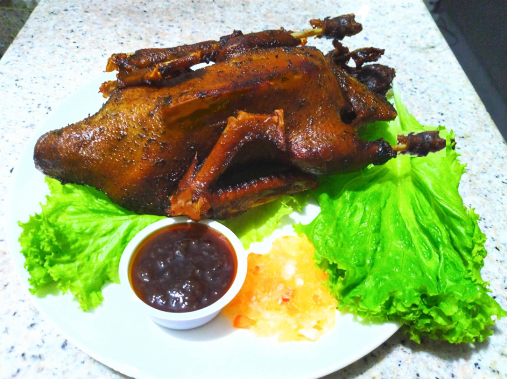
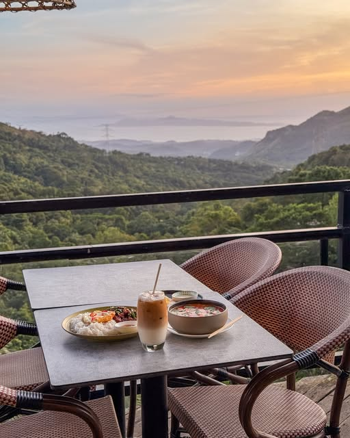

Why Rizal food is unforgettable
Rizal’s culinary scene combines homegrown ingredients with time-honored cooking methods. Expect bold flavors, comforting specialties, and delightful pasalubong treats.
Local Specialties
From suman to minaluto, Rizal serves traditional Filipino cuisine with authentic regional twists.
Food Destinations
Discover bustling markets, specialty cafes, and roadside stalls where each bite tells a local story.
Pasalubong Picks
Take home roasted kasoy, native rice cakes, and local coffee as tasty reminders of the province.

Suman sa Ibos
Antipolo’s famous sticky rice delicacy wrapped in palm leaves, best enjoyed with sweet mangoes or raw sugar.
Where to try: Antipolo City Public Market stalls and Hinulugang Taktak souvenir kiosks

Roasted Kasoy
Fresh cashews roasted until buttery and crunchy, a top pasalubong item from Antipolo and Taytay.
Where to try: Antipolo pasalubong shops along Sumulong Highway and Taytay Market stalls

Minaluto
A traditional bilao of seafood, rice, vegetables, and native flavors made famous by Angono family-style restaurants.
Where to try: Angono specialty eateries near the Pablo Ocampo Shrine and Tanay family-style restaurants

Fried Itik
Deep-fried native duck seasoned with local spices, crispy outside and tender inside — a signature provincial specialty.
Where to try: Angono food parks and Taytay carinderias along Ortigas Avenue Extension
Cainta’s Kakanin
A rich assortment of native rice cakes like sapin-sapin, biko, and maja blanca, served during festivals and special events.
Where to try: Cainta Public Market and Rizal Mall kakanin vendors

Mountain Coffee
Freshly brewed local coffee served in Antipolo and Tanay cafés, ideal for savoring with scenic valley views.
Where to try: Antipolo Sumulong Highway cafés and Tanay mountain-view coffee shops